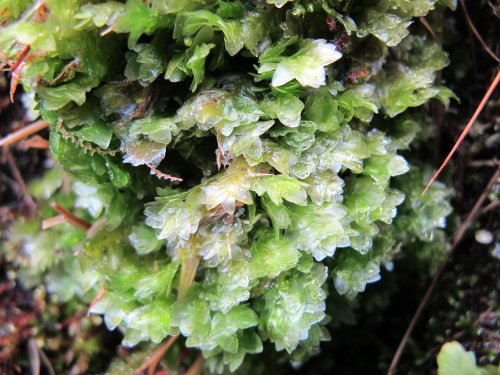

På styvingstrær av alm og ask (ARKO-prosjektet, sammen med Björn Nordén, NINA)
Lopadostoma pouzarii er en lite
kjent kjernesopp på død ved av alm. De svarte prikkene er toppen
av nedsenkete fruktlegemer (perithecier, hvor sporer dannes inne
i en svart ”beholder”). I Sverige står den på rødlista, men er
ikke vurdert i Norge. Fra MR Norddal: Kleivahamrane i Eidsdal.
Amphisphaeria umbrina er en lite
kjent sekksporesopp som danner svarte, kjegleformete
fruktlegemer (perithecier) som vokser delvis nedsenket i barken
av alm. Fra MR Nesset: Stranda ved Eikesdalsvatnet.
Glyphium elatum er en kjernesopp som
vokser på død ved av flere treslag, her på almegreiner i
Mørkrisdalen i SF Luster.
Skjellkjuke Polyporus squamosus
vokser på flere løvtreslag, men er særlig typisk på gammel alm
på Vestlandet. Her fra Mørkrisdalen i SF Luster.
Almeglye Collema fragrans (CR) er en
liten lav som i 2012 ble gjenfunnet på sin eneste kjente
lokalitet i Mørkrisdalen i SF Luster, hvor den vokser sparsomt
på grov bark av gamle styva almer. Flere av de aktuelle trærne
ble felt av orkanen Dagmar. Dessuten ble den høsten 2012 også
funnet på en ny lokalitet, også i indre Luster (og også på styva
alm).
Lavarten Gyalecta geoica vokser en
gang i mellom på bark av gammel alm i kyststrøk på Vestlandet.
Den er gjerne gulere enn G. flotowii som den ellers
ligner på. Fra Overå (Svarthammaren) i MR Stranda.
I kulturmarkseng (naturbeitemark og slåttemark) (mest fra
ARKO-prosjektet, sammen med Harald Bratli, NINA)
Fiolett rødspore Entoloma mougeotii
er en vakker sopp (slekta er nylig omdøpt fra rødskivesopp til
rødspore på norsk). Den er kalkkrevende og vokser oftest i
engvegetasjon på kalkrik grunn. Her fra Op Sel: Granrud.
Dynejordtunge Geoglossum cookeanum
vokser ofte i sandrike engsamfunn, her fra VA Farsund:
Hamrestranda (Lista).
Det er alltid fristende å ta bilde av denne
vakre arten, rød honningvokssopp Hygrocybe splendidissima.
I dette tilfellet luktet den også tydelig honning, noe den ikke
alltid gjør. Den finnes helst langs kysten. Fra VA Farsund:
beite ved Haugetjørn.
Sadelmorkel Helvella queletii ble
funnet i kalkrik naturbeitemark på Ljøneshammarsetra i No Bodø.
”Blåklokkevikua” før slåtten, fra
slåttemark i MR Sunndal: Jordalsgrenda.
Grov nattfiol Platanthera montana
trives særlig i gammel slåttemark og veikanter som blir slått
(mest langs kysten nordover til Trøndelag), fra slåtteeng i MR
Sunndal: Jordalsgrenda.
Naturtypekartlegging mm. i Møre og Romsdal
Sitkagran Picea sitchensis er mye
plantet langs kysten. Her er selvsådd sitkagran som spirer oppå
en bjørkelåg i edellauvskog ved Hustad i Fræna. Når lågen
råtner, sender grana røtter ned i skogbunnen og etablerer seg.
De spirer også på steinblokker og i selve skogbunnen, og vil nok
gradvis kunne overta annen skog langs kysten.
Bruntelg Dryopteris expansa var.
willeana regnes som en varietet av sauetelg. Den skiller seg
ut bl.a. ved å ha brunsvart midtribbe. Den har et ganske lite
utbredelsesområde i Møre og Romsdal og Trøndelag.
Hinnebregne Hymenophyllum wilsonii
viste seg å vokse mange steder som ikke var tidligere kjent i MR
Midsund. Dette er en plante med en kystbundet (oseanisk)
utbredelse, og tåler dårlig både uttørking og vinterfrost.
Derfor finnes den gjerne langs den frostfattige ytterkysten, og
i nordvendte kløfter hvor den sjelden utsettes for tørke. Bildet
er fra ei nordvendt kløft ved Rakvågen.

Dronningmose Hookeria lucens er en
av mange moser med en mer eller mindre kystbundet utbredelse.
Den regnes som ”suboseanisk”, dvs. den kan gå innover i
fjordene, men trives best i fuktige nordvendte kløfter på
kysten. Her fra Bendsetdalen i MR Midsund.
Narreglye Staurolemma omphalarioides
ble funnet av Geir Gaarder på ny sørgrense i 2012, ved Horsgård
i MR Molde. Den var tidligere kjent fra et område i Nordland og
Nord-Trøndelag, men er nå kjent fra flere funn i Møre og Romsdal
og Sør-Trøndelag. Den vokser på gamle, soleksponerte osper i et
fuktig lokalklima, og det er skrevet utkast til handlingsplan
med sikte på at den kan bli en prioritert art etter
Naturmangfoldloven.
Laksekjuke Erastia salmonicolor er
en ganske sjelden kjuke på død furuved som helst forekommer i
gammel furuskog. Fra MR Nesset Prestaksla.